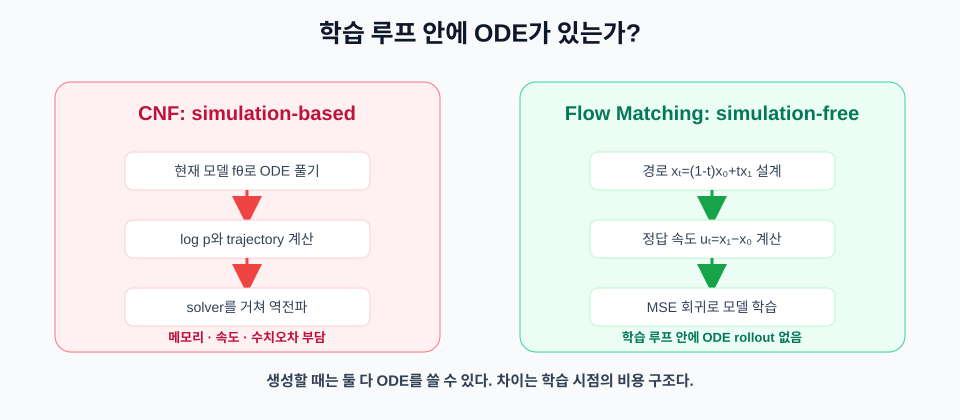
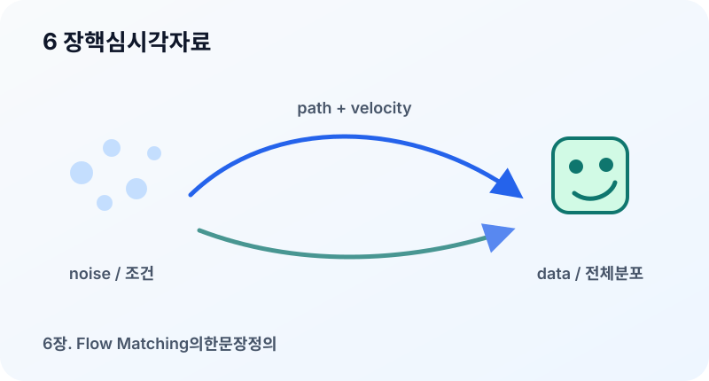

6장. Flow Matching의 한 문장 정의¶
이 장의 질문¶
Diffusion model은 노이즈를 조금씩 걷어 내는 방식으로 이미지를 만들었다. 그렇다면 Flow Matching은 무엇을 “맞춘다”고 말하는 걸까? 이 장의 목표는 Flow Matching을 한 문장으로 정의하되, 그 문장 안에 들어 있는 확률 경로, 속도장, ODE(Ordinary Differential Equation, 상미분방정식), 학습 목표의 의미를 하나씩 분해하는 것이다.
Flow Matching을 처음 접하면 이름이 주는 인상이 다소 추상적이다. flow는 분포가 움직이는 흐름이고, matching은 모델이 그 흐름의 속도를 맞춘다는 뜻이다. 이 설명은 짧지만 충분하지 않다. 우리는 실제로 어떤 분포가 움직인다고 상상해야 하는지, 그 움직임을 어떤 함수가 담당하는지, 신경망은 어떤 값을 예측하도록 학습되는지까지 알아야 한다.
이 장에서 사용할 핵심 문장은 다음과 같다.
Flow Matching은 단순한 시작 분포에서 데이터 분포로 이어지는 확률 경로를 정하고, 그 경로를 따라 샘플을 이동시키는 속도장 \(u_t(x)\)를 신경망 \(v_\theta(x,t)\)가 맞추도록 학습하는 방법이다.
이 문장에는 네 가지 대상이 들어 있다.
- 시작 분포 \(p_0\)
- 목표 데이터 분포 \(p_1\)
- 중간 분포들의 가족 \(p_t\)
- 그 분포를 이동시키는 속도장 \(u_t(x)\)
앞 장에서 배운 연속 방정식은 이 네 가지가 서로 맞물리는 방식을 설명한다.
이 식은 분포 \(p_t\)가 속도장 \(u_t\)를 따라 움직일 때 확률 질량이 보존된다는 뜻이다. Flow Matching은 이 식을 직접 풀어서 학습하는 것이 아니라, 이 식을 만족하도록 설계된 속도 목표를 샘플 단위로 학습한다.
생성 모델을 “분포를 옮기는 문제”로 보기¶
생성 모델의 목표는 데이터처럼 보이는 샘플을 만드는 것이다. 확률적으로 표현하면, 우리가 다루기 쉬운 분포에서 샘플을 뽑은 뒤 그 샘플을 데이터 분포로 보내고 싶다는 뜻이다.
보통 시작 분포는 표준 정규분포처럼 단순하게 둔다.
목표 분포는 실제 데이터가 따르는 분포다.
물론 \(p_1\)의 밀도 함수를 정확히 알지는 못한다. 우리가 가진 것은 데이터셋의 샘플뿐이다. 따라서 생성 모델은 \(p_1\)을 명시적으로 쓰지 않고도 그 분포에서 온 것처럼 보이는 샘플을 만들 수 있어야 한다.
Flow Matching은 이 문제를 다음과 같이 바꾼다.
- \(t=0\)에서는 단순한 노이즈 분포 \(p_0\)에 있다.
- \(t=1\)에서는 데이터 분포 \(p_1\)에 도착한다.
- \(0<t<1\)에서는 중간 분포 \(p_t\)를 지나간다.
- 각 시각 \(t\)에서 샘플이 어느 방향으로 움직여야 하는지 속도 \(u_t(x)\)를 정한다.
- 모델 \(v_\theta(x,t)\)가 그 속도를 예측하게 한다.
이렇게 보면 생성은 샘플을 한 번에 맞히는 문제가 아니라, 시간에 따라 위치를 업데이트하는 동역학 문제가 된다.
확률 경로 \(p_t\)란 무엇인가¶
확률 경로는 시간 \(t\)에 따라 달라지는 분포의 가족이다.
여기서 \(t\)는 실제 물리 시간이 아니라 생성 과정을 나타내는 인공 시간이다. \(t=0\)은 출발점, \(t=1\)은 도착점이다. 중간의 \(t\)는 샘플이 어느 정도 데이터 쪽으로 이동했는지를 나타낸다.
중요한 점은 \(p_t\)를 하나만 정할 수 있는 것이 아니라는 점이다. 노이즈에서 데이터로 가는 경로는 여러 방식으로 만들 수 있다. 직선으로 갈 수도 있고, 곡선으로 갈 수도 있으며, 먼저 크게 움직이다가 뒤에서 미세 조정할 수도 있다.
가장 단순한 예는 두 점 \(x_0\)와 \(x_1\)을 직선으로 잇는 경로다.
이때 속도는 시간에 대해 미분하면 된다.
이 예에서는 속도가 일정하다. 하지만 실제 Flow Matching에서는 조건부 경로, 가우시안 경로, optimal transport에 가까운 경로 등 다양한 선택이 가능하다. 13장에서 경로 선택을 더 깊게 다룬다.
속도장 \(u_t(x)\)의 의미¶
속도장은 특정 시각 \(t\)와 위치 \(x\)에서 샘플이 어느 방향으로 얼마나 빠르게 움직여야 하는지를 알려 주는 함수다.
입력과 출력의 차원은 같다. 이미지라면 입력은 이미지 텐서와 같은 차원의 위치이고, 출력은 그 이미지 텐서가 다음 순간 어느 방향으로 변해야 하는지를 나타내는 벡터다.
ODE 관점에서는 샘플의 이동을 다음과 같이 쓴다.
신경망은 이 실제 속도장 \(u_t\)를 모른다. 대신 모델 \(v_\theta\)를 두고 다음과 같이 근사한다.
학습이 잘 되면 \(v_\theta(x,t)\)는 \(u_t(x)\)와 비슷해진다. 그러면 시작점 \(x_0\sim p_0\)에서 ODE를 \(t=0\)부터 \(t=1\)까지 적분했을 때 데이터처럼 보이는 샘플을 얻을 수 있다.
Flow Matching loss¶
가장 단순한 Flow Matching의 손실은 예측 속도와 목표 속도의 평균제곱오차다.
이 식을 그대로 보면 한 가지 문제가 있다. \(u_t(x)\)를 모든 위치 \(x\)에서 알고 있어야 할 것처럼 보인다. 하지만 현실에서는 데이터 샘플만 있고 전체 분포의 속도장을 직접 계산하기 어렵다.
그래서 실제로 많이 쓰이는 방식은 조건부 경로를 통해 샘플 단위의 목표 속도를 만든다. 예를 들어 \(x_0\)와 \(x_1\)을 뽑고 그 사이의 중간점 \(x_t\)와 속도 \(u_t\)를 계산한다.
그 다음 모델은 다음 목표를 학습한다.
이것이 Conditional Flow Matching의 기본 형태다. 7장과 8장에서 이 식이 왜 정당한지, 구현할 때 어떤 텐서가 필요한지 자세히 본다.
Diffusion과의 첫 번째 차이¶
Diffusion model도 \(t=0\)과 \(t=1\) 사이의 경로를 다룬다. 그러나 diffusion에서는 흔히 데이터에 노이즈를 더하는 forward process를 정의하고, reverse process를 학습한다. Flow Matching은 분포 사이를 잇는 경로와 그 경로의 속도장을 직접 학습한다.
대략적으로 비교하면 다음과 같다.
| 관점 | Diffusion | Flow Matching |
|---|---|---|
| 중심 대상 | 노이즈 제거, score, reverse dynamics | 확률 경로, velocity field |
| 학습 목표 | noise, score, 또는 velocity 예측 | velocity 예측 |
| 생성 과정 | reverse SDE(Stochastic Differential Equation, 확률미분방정식)/ODE 또는 sampler | ODE 적분 |
| 경로 설계 | 노이즈 스케줄 중심 | probability path 중심 |
이 표는 단순화된 비교다. 실제로는 diffusion에서도 ODE를 사용할 수 있고, velocity parameterization을 쓰는 diffusion 모델도 있다. 따라서 “완전히 다른 세계”라기보다 같은 연속 생성 모델 관점에서 서로 다른 표현과 학습 방식을 택한다고 보는 편이 정확하다.
Simulation-free라는 말의 의미¶
Flow Matching 문헌에서 자주 등장하는 표현이 simulation-free training이다. 이것은 학습할 때 ODE를 매번 풀지 않아도 된다는 뜻이다.
이 말은 CNF와 비교하면 선명해진다. CNF에서는 현재 신경망이 만든 velocity field가 곧 경로를 정의한다. 따라서 어떤 데이터의 likelihood를 계산하거나 모델을 업데이트하려면, 매번 ODE를 따라 \(t=0\)에서 \(t=1\)까지 흘려보고, 그 과정에서 밀도 변화와 gradient를 계산해야 한다. 비유하면 길이 맞는지 확인하려고 서울에서 부산까지 매번 직접 운전해 보는 방식이다.
ODE 기반 생성 모델은 원래 다음 문제가 있다.
- 어떤 파라미터 \(\theta\)가 주어졌을 때 ODE를 풀어 샘플을 만든다.
- 샘플과 데이터를 비교하거나 likelihood를 계산한다.
- ODE solver를 거친 그래디언트를 계산한다.
이 방식은 비용이 크고 구현도 복잡하다. 특히 학습 중 ODE 시뮬레이션은 세 가지 부담을 만든다.
- 메모리: trajectory와 solver 내부 상태를 저장하거나 다시 계산해야 한다.
- 속도: 한 번의 학습 step 안에 여러 번의 함수 평가가 들어간다.
- 안정성: solver tolerance, step size, 수치 오차가 학습 dynamics에 영향을 준다.
Flow Matching은 문제를 다르게 놓는다. 학습 중에 모델이 만든 경로를 따라가며 평가하지 않고, 우리가 먼저 경로를 설계한다. 그러면 학습 시점에 중간 샘플 \(x_t\)와 목표 속도 \(u_t\)를 직접 만들 수 있다. 학습은 일반적인 supervised regression처럼 된다.

생성할 때만 ODE solver를 사용한다. 이 구분이 중요하다.
- 학습: 임의의 \(t\)에서 속도를 맞춘다.
- 생성: 학습된 속도장을 따라 ODE를 적분한다.
아주 작은 코드로 보면 이 차이는 더 선명하다.
x_t = (1 - t) * x_0 + t * x_1
target_velocity = x_1 - x_0
loss = ((model(x_t, t) - target_velocity) ** 2).mean()
이 세 줄은 Flow Matching의 가장 단순한 형태를 보여 준다. 중간 샘플을 만들고, 그 경로의 정답 속도를 계산한 뒤, neural network가 그 속도를 예측하도록 회귀한다. ODE rollout은 학습 루프 안에 없고, 학습이 끝난 뒤 sampling 때만 등장한다.
Flow Matching이 보장하지 않는 것¶
Flow Matching의 정의만으로 모든 문제가 해결되지는 않는다. 경로를 어떻게 정하느냐, 모델이 충분히 큰가, 시간 임베딩이 적절한가, ODE solver가 충분히 정확한가에 따라 결과가 달라진다.
특히 다음 오해를 조심해야 한다.
첫째, Flow Matching은 “한 번에 이미지를 생성하는 방법”이 아니다. 생성 시에는 여전히 여러 스텝으로 ODE를 적분한다.
둘째, 모든 경로가 좋은 것은 아니다. 같은 \(p_0\)와 \(p_1\)을 잇더라도 경로가 지나치게 복잡하면 모델이 배워야 하는 속도장도 복잡해진다.
셋째, MSE(Mean Squared Error, 평균제곱오차) loss가 작다고 항상 좋은 샘플이 나오는 것은 아니다. 학습 loss, ODE solver 설정, 시각적 품질, 분포 커버리지를 함께 확인해야 한다.
넷째, diffusion과 경쟁하는 하나의 이름으로만 보면 이해가 좁아진다. Flow Matching은 continuous normalizing flow, diffusion, optimal transport, rectified flow를 연결하는 언어로도 중요하다.
머릿속 체크리스트¶
Flow Matching 논문이나 구현을 읽을 때는 다음 질문을 먼저 던지면 좋다.
- 시작 분포 \(p_0\)는 무엇인가?
- 목표 분포 \(p_1\)는 무엇인가?
- 중간 경로 \(p_t\)는 어떻게 정의되는가?
- 학습 샘플 \(x_t\)는 어떻게 만드는가?
- 목표 속도 \(u_t\)는 닫힌 형태로 계산되는가?
- 모델 \(v_\theta(x,t)\)는 어떤 조건을 입력으로 받는가?
- 생성 시 ODE solver는 어떤 방식과 step 수를 쓰는가?
이 질문에 답할 수 있으면 대부분의 Flow Matching 방법을 구조적으로 읽을 수 있다.
시각 자료¶

- 분포 이동 그림: 왼쪽의 둥근 정규분포 구름이 오른쪽의 데이터 분포 구름으로 이동하는 흐름을 화살표로 표시한다.
- 속도장 그림: 2차원 평면 위의 여러 점마다 작은 화살표를 그려 \(u_t(x)\)가 위치별 방향을 갖는다는 점을 보여 준다.
- 학습과 생성 분리 그림: 학습 단계에서는 \((x_t,t)\)에서 목표 속도를 맞추고, 생성 단계에서는 ODE를 적분하는 두 흐름을 나란히 배치한다.
요약¶
- Flow Matching은 확률 경로 \(p_t\)를 따라 샘플을 이동시키는 속도장 \(u_t(x)\)를 모델이 맞추는 방법이다.
- 생성 과정은 \(\frac{d x_t}{dt}=v_\theta(x_t,t)\)라는 ODE를 적분하는 형태로 표현된다.
- 학습에서는 ODE를 직접 풀기보다 중간 샘플과 목표 속도를 만들어 supervised regression처럼 학습하는 경우가 많다.
- Diffusion과 Flow Matching은 모두 연속 시간 생성 모델의 언어로 볼 수 있지만, 중심 학습 대상과 경로 해석이 다르다.
- Flow Matching을 읽을 때는 시작 분포, 목표 분포, 경로, 목표 속도, solver 설정을 함께 확인해야 한다.